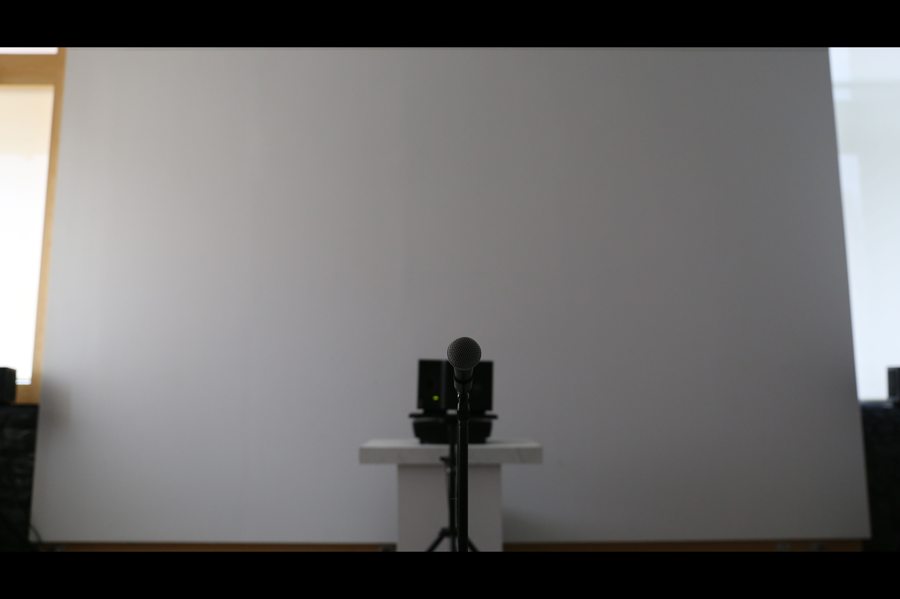
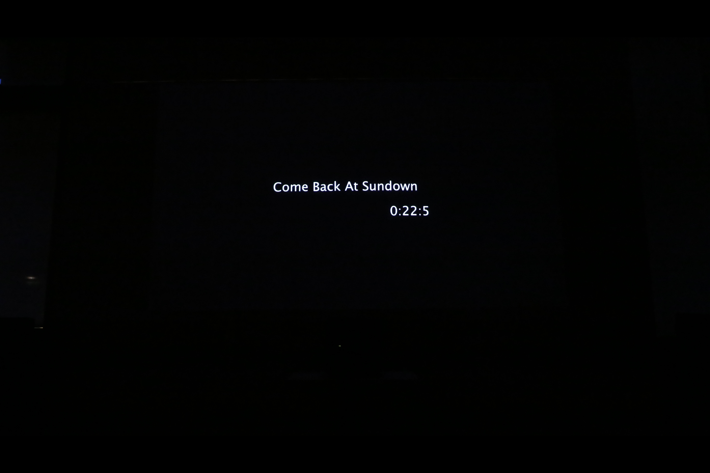

1 / 4

2 / 4

3 / 4

4 / 4

is an exploration of sociality through sound, sight, and time. Based on an algorithm that describes bird flocking patterns, this work bends the forces dictating behavior to continuously create new modes of interaction. This creation, sometimes sudden and other times gradual, is reflected in the modulation of a representative soundscape. The audience is both observer and disruptor as they exist inside of a generative process of building and breaking social connections.
Installed in November of 2018, with in ran for three weeks in the Black Family Visual Arts Center at Dartmouth College. The work started every night at sundown and would continue until sunrise, at which time the screen would be replaced with a countdown clock for the following sunset.
The installation is written in Max MSP and Processing, and the code can all be found here, on Github. Each time with in is run it develops in a unique way, such that each execution is different. Below is an excerpt of a sample execution.